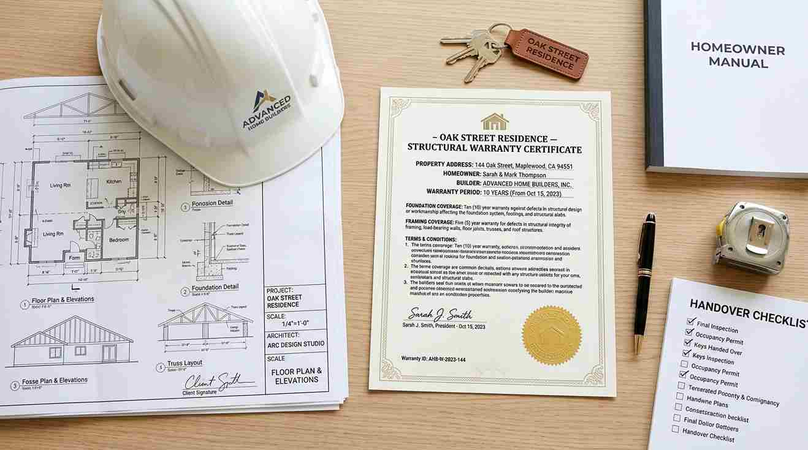

Daftar Isi
Jasa kontraktor rumah Jakarta menangani pembangunan dari tahap pondasi hingga finishing dengan jadwal kerja yang terikat kontrak dan garansi struktur hingga sepuluh tahun untuk memberi kepastian kepada pemilik rumah.
Apa Saja Layanan yang Tercakup dalam Jasa Kontraktor Rumah Jakarta?
Layanan mencakup pembangunan rumah baru dari nol, mulai dari pekerjaan persiapan lahan, pondasi, struktur beton bertulang, dinding, atap, hingga finishing interior dan eksterior sesuai gambar kerja yang disepakati.
Selain pembangunan baru, sebagian kontraktor juga melayani proyek renovasi berat yang melibatkan perubahan struktur, seperti penambahan lantai pada rumah lama. Seluruh proses dikerjakan oleh tim yang terdiri dari kepala tukang, mandor, dan pengawas lapangan yang melapor secara berkala kepada pemilik rumah mengenai progres pekerjaan setiap tahapnya.
Bagaimana Kontraktor Menjamin Pembangunan Selesai Tepat Waktu?
Kepastian waktu pengerjaan dijamin melalui jadwal kerja atau kurva S yang disusun sejak awal kontrak, mencantumkan target penyelesaian setiap tahap pekerjaan mulai dari struktur hingga finishing, sehingga progres dapat dipantau secara terukur.
Apabila terjadi keterlambatan yang disebabkan oleh pihak kontraktor, umumnya terdapat klausul kompensasi yang diatur dalam kontrak kerja sebagai bentuk tanggung jawab atas keterlambatan tersebut. Kepastian jadwal ini menjadi salah satu keunggulan utama menggunakan jasa kontraktor dibandingkan mengelola tukang lepas secara mandiri, karena adanya sistem pengawasan dan tanggung jawab kontraktual yang lebih jelas antara kedua belah pihak.

Apa Cakupan Garansi Struktur 10 Tahun yang Ditawarkan?
Garansi struktur sepuluh tahun umumnya mencakup kegagalan pada elemen struktural utama seperti pondasi, kolom, dan balok beton, apabila terjadi kerusakan yang disebabkan oleh kesalahan pengerjaan bukan akibat bencana alam atau perubahan beban di luar rencana awal.
Garansi ini memberi rasa aman jangka panjang bagi pemilik rumah, mengingat kerusakan struktur biasanya baru terlihat setelah bertahun-tahun bangunan berdiri. Detail cakupan dan ketentuan garansi sebaiknya selalu tercantum secara tertulis dalam kontrak kerja, termasuk prosedur klaim apabila ditemukan indikasi kerusakan struktural di kemudian hari, sehingga tidak menimbulkan kesalahpahaman antara pemilik rumah dan pihak kontraktor.
Berapa Kisaran Biaya dan Proses Awal Menggunakan Jasa Kontraktor Rumah Jakarta?
Biaya jasa kontraktor umumnya dihitung berdasarkan luas bangunan, spesifikasi material, dan tingkat kompleksitas desain, dengan proses awal dimulai dari survey lokasi dan penyusunan Rencana Anggaran Biaya secara rinci sebelum kontrak kerja ditandatangani.
Wilayah layanan kontraktor ini mencakup seluruh area DKI Jakarta dan sebagian Jabodetabek, dengan tim yang dapat dijadwalkan untuk survey lokasi setelah permintaan awal diajukan. Calon klien yang ingin mendapatkan estimasi biaya dan jadwal konsultasi dapat hubungi jasa kontraktor rumah jakarta profesional untuk memulai proses survey dan penyusunan rencana kerja sesuai kebutuhan serta anggaran yang dimiliki.